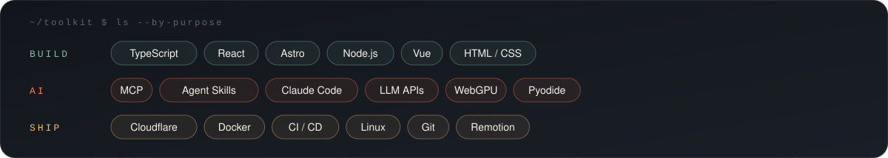

I'm Hew, a frontend engineer who now spends most of my time building for and with AI agents.
My day job is React + TypeScript. My side job is figuring out what agents actually need to be useful: eyes on the browser (MCP), a repeatable way of thinking (Agent Skills), memory that doesn't rot (dreaming), and models small enough to run on your own device. Then I ship the results as tools real people can use.
const hew = {
building: ["MCP servers", "Agent Skills", "in-browser AI"],
shipping: ["ToolkitFree", "诗之境 · Poetry in Motion"],
believes: "Verify, don't vibe. Ship small, ship often.",
} as const;
Experiments in making agents more capable. Each one is small, readable, and runnable.
|
 An MCP server that lets Claude Code / Cursor attach to a running Chrome tab, read console errors, run JS, and verify their own fixes with onereload_and_check.
|
 An Agent Skill that runs a 14-step requirements process: it searches real competitors, checks platform limits, and forces you to resolve contradictions. Tested on Claude Code & Codex. |
|
 A minimal TypeScript take on layered agent memory and offline “dreaming” consolidation. Plain files, no vector DB, works with Anthropic or any OpenAI-compatible API. |
 Measured, not guessed: a 30–40 MB TTS model running fully offline in the browser. WebGPU reaches first audio 12–23× faster than CPU/WASM. |
Products that are live and used by real people.
|
 Free online image, PDF and video tools: background remover, image → PDF, splitter, compressor and more. Processing happens in your browser. toolkitfree.net ↗ |
 Classical Chinese poems turned into interactive, code-driven scenes, where culture meets creative coding. shi.guoxueji.org ↗ |
In the workshop → glim: press, glance, go, a minimal word-lookup & translation tool for Windows · playful early-learning animations for kids, built with Remotion

I write about AI agents, dev tools, and indie building, including experiments, benchmarks, and behind-the-scenes notes. Find me on X @ruofeng_x, or open an issue on any repo if something here sparks an idea.